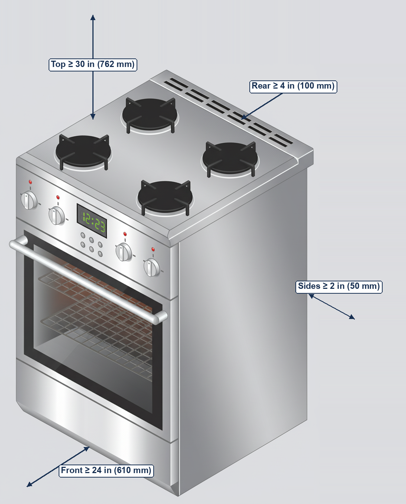
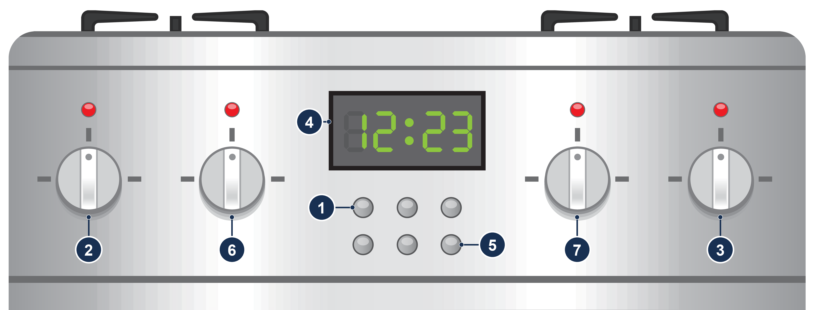
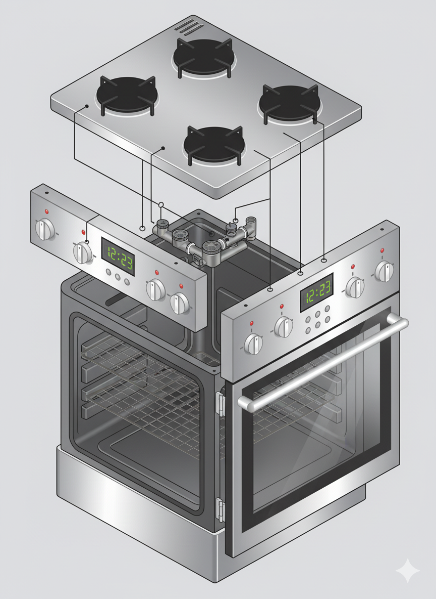
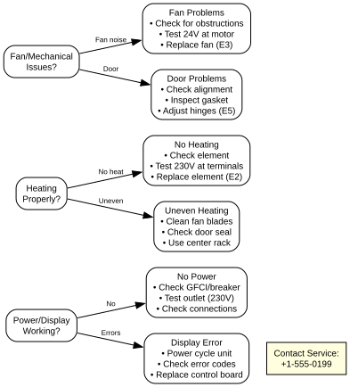

This manual covers installation, operation, safety, cleaning, and troubleshooting for the fictional IronClad K-Oven 12 Pro, a freestanding range combining an electric convection oven with a four-burner gas hob. Prepared as a portfolio sample.
1. Introduction
Manufacturer: IronClad Home Appliances, 101 Hearth Street, Springfield, USA
Support: support@ironclad-home.example · +1-800-555-0199
Intended audience: This manual has two audiences.
Installation and the technician-only parts of Troubleshooting are for qualified installers (licensed electrician and licensed gas installer) and service technicians.
All other chapters are for the household user.
Scope: safe installation, operation of the oven and gas hob, periodic cleaning, troubleshooting, and recordkeeping.
2. Safety Information
|
DANGER
If you smell gas — fire or explosion hazard. Gas escaping near an ignition source can explode or burn, causing death, serious injury, or property damage.
Do not store or use gasoline or other flammable vapors and liquids in the vicinity of this or any other appliance. Installation and service must be performed by a qualified installer, service agency, or the gas supplier. |
|
WARNING
Fire, electric shock, and burn hazards. Improper installation, maintenance, or use can cause fire, electric shock, serious burns, or death. Read and follow all instructions in this manual before operating this appliance. |
2.1. General Safety
-
Disconnect power at the circuit breaker before cleaning behind the range or replacing the oven light.
-
Keep combustible materials (towels, curtains, paper, packaging) away from the hob and the oven vent at all times, and maintain the installation clearances in [clearances].
-
Do not operate with a damaged power cord, plug, gas connector, or control panel.
-
Never use the range or oven to heat the room.
-
Never leave a lit hob burner unattended.
2.2. PPE (Personal Protective Equipment)
-
Heat-resistant oven mitts
-
Eye protection when servicing interior components
-
Protective clothing to avoid burns
3. Installation
|
WARNING
Fire, gas, and electrical hazards. Incorrect installation can cause fire, explosion, carbon monoxide poisoning, or electric shock. Electrical work must be performed by a licensed electrician, and the gas hob must be connected and leak-tested by a licensed gas installer before first use. Improper installation also voids the warranty. |
3.1. Pre-Installation Checklist
-
Verify electrical supply: 240/208 V AC, 60 Hz, 4-wire, on a dedicated 40 A circuit.
-
Verify gas supply: natural gas at the supply pressure listed on the rating plate, with an accessible manual shutoff valve. For LP (propane) gas, order the LP conversion kit before installation.
-
Check installation space: measure clearances and ensure adequate ventilation (a range hood vented to the outdoors is recommended).
-
Gather required tools: level, drill, screwdrivers, adjustable wrench, electrical tester, measuring tape, leak-detection solution.
-
Review local codes: installation must comply with the National Electrical Code (NFPA 70), the National Fuel Gas Code (ANSI Z223.1/NFPA 54), and all local codes.
3.2. Step-by-Step Installation Procedure
3.2.1. Prepare Installation Location
-
Clear the area: remove packaging and inspect the range for shipping damage.
-
Measure space: verify the minimum clearances in the table below.
-
Check flooring: ensure the floor can support the range (approx. 80 kg / 176 lb) plus the weight of cookware and food.

| The illustration is schematic and not to scale. The table below lists all required clearances, including side walls above hob level. |
| Location | Minimum Clearance | Reason |
|---|---|---|
Rear wall |
4 in (100 mm) |
Room for the gas connector, power cord, and anti-tip bracket |
Side walls (below hob level) |
2 in (50 mm) each |
Room to slide the range in and out for service |
Combustible side walls above hob level |
6 in (152 mm) |
Fire hazard from burner flames and hot cookware |
Top — hob surface to combustible overhead cabinets |
30 in (762 mm) |
Fire hazard; reaching over lit burners |
Front |
24 in (610 mm) |
Door opening and safe operation |
3.2.2. Anti-Tip Bracket
|
WARNING
Tip-over hazard. A child or adult can tip the range and be killed or seriously burned. Install the anti-tip bracket supplied with the range, and engage the range with the bracket. Re-engage the bracket whenever the range is moved. |
-
Mark the bracket position using the template supplied with the range.
-
Fasten the bracket to the floor (or to the wall plate) with the supplied screws, into solid wood or concrete anchors.
-
When you slide the range into place (see Positioning and Leveling), make sure the rear leveling leg slides fully under the bracket.
-
Verify engagement: grasp the top rear edge of the range and tilt it gently forward. The bracket must stop the range from lifting.
3.2.3. Electrical Connection
|
DANGER
Electric shock hazard. Contact with live 240 V conductors will cause death or serious injury. Switch the circuit breaker OFF and lock it out, then verify absence of voltage with a tested electrical tester before making any connection. |
-
Install dedicated circuit: 240/208 V, 60 Hz, 40 A, protected by a 2-pole breaker.
-
Use proper wiring: 8 AWG copper minimum for the 40 A circuit.
-
Connect ground wire: green or bare copper equipment-grounding conductor to the ground terminal (mandatory). Do not bond neutral to the range frame.
-
Install outlet: NEMA 14-50R 4-wire grounded receptacle, positioned behind the range where the range cord reaches it without strain.
-
Provide GFCI protection where required by NEC 210.8 and local code.
-
Measure voltage between the two hot terminals: 240 V ±10% expected (208 V ±10% on 208 V systems). Each hot to neutral: 120 V ±10%.
-
Verify ground continuity: < 1 Ω resistance to ground.
-
If the circuit is GFCI-protected, press the TEST button; the device must trip immediately.
-
Reset the GFCI and verify that power is restored.
3.2.4. Gas Connection
The range is shipped set up for natural gas. Conversion to LP (propane) gas must be performed by a qualified installer using the IronClad LP conversion kit, and the conversion label must be completed and attached next to the rating plate.
-
Close the manual shutoff valve on the gas supply.
-
Connect the range to the supply with a new, design-certified flexible gas connector. Do not reuse an old connector.
-
Apply pipe-thread sealant rated for natural and LP gas to all male threads (not to flare fittings).
-
Open the shutoff valve and check every connection with a leak-detection solution. Bubbles indicate a leak: close the valve, tighten, and retest.
|
WARNING
Fire or explosion hazard. Never check for gas leaks with an open flame. Use only a leak-detection solution. |
3.2.5. Positioning and Leveling
-
Position the range: slide it into its final location, keeping the required clearances and engaging the anti-tip bracket.
-
Check stability: the range should not rock when the door is opened.
-
Adjust leveling legs: use an adjustable wrench to level the range in both directions.
-
Verify level: place a spirit level on an oven rack; the bubble should be within the center marks.
-
Maximum deviation: ±1/16 in (2 mm) over range width and depth
-
Door closes smoothly without forcing
-
No gaps > 1/8 in (3 mm) between door and frame when closed
3.2.6. Initial Power-On and Testing
-
Connect power: plug the range cord firmly into the grounded receptacle and switch the breaker ON.
-
Initial startup: press the power button. The display illuminates.
-
Test all oven modes: cycle through Bake, Broil, Convection, and Self-Clean.
-
Verify door lock: start Self-Clean briefly and confirm the door locks, then cancel the cycle.
-
Check interior lighting: the light should switch on when the door opens.
-
Test hob burners: light each burner (see Using the Gas Hob) and confirm a steady blue flame.
3.3. Post-Installation Verification Checklist
| Test Item | Pass/Fail |
|---|---|
Anti-tip bracket installed and engaged |
☐ |
No gas leaks at any connection (leak-detection solution) |
☐ |
Each hob burner lights within 4 seconds with a steady blue flame |
☐ |
Power indicator illuminates when power is connected |
☐ |
All mode buttons respond and display correctly |
☐ |
Temperature dial adjusts display reading |
☐ |
Timer counts down properly |
☐ |
Interior light activates with door opening |
☐ |
Door seals properly with no visible gaps |
☐ |
Range remains level when door is fully opened |
☐ |
No unusual vibration during convection fan operation |
☐ |
Self-Clean mode activates and locks door |
☐ |
All clearances maintained per specification |
☐ |
3.4. Initial Break-In Procedure
Before first use, perform the break-in procedure to remove manufacturing residues:
-
Set to Bake mode at 400 °F (200 °C) for 30 minutes with the oven empty.
-
Ventilate the kitchen. A slight odor from protective coatings is normal.
-
Clean the interior with a damp cloth after cooling to remove any residue.
-
Record the installation date in the warranty documentation.
4. Operation
4.1. Control Panel Overview

-
Power button
-
Mode selector (Bake, Broil, Convection, Self-Clean)
-
Temperature dial
-
Digital timer/display
-
Child lock button
-
Left hob burner controls (front and rear burners)
-
Right hob burner controls (front and rear burners)
Controls 6 and 7 are concentric (stacked) knobs: on each side, the inner knob operates the front burner and the outer ring operates the rear burner. See Using the Gas Hob.
4.2. Using the Gas Hob
The hob has four sealed gas burners with electronic spark ignition. The range is supplied for natural gas; LP (propane) operation requires conversion by a qualified installer (see Gas Connection).
| Burner | Control | Typical Use |
|---|---|---|
Front-left |
Knob 6, inner knob |
Frying, boiling |
Rear-left |
Knob 6, outer ring |
Simmering, sauces |
Front-right |
Knob 7, inner knob |
Rapid boiling, searing |
Rear-right |
Knob 7, outer ring |
General cooking |
-
Make sure the burner cap is correctly seated on the burner base.
-
Push in the knob or ring for the burner and turn it counterclockwise to LITE. The igniter clicks.
-
When the flame lights, turn the control to the desired setting. The igniter stops clicking.
-
If the burner does not light within 4 seconds, turn the control to OFF, wait 5 minutes for the gas to dissipate, and try again.
-
A correct flame is steady and blue, with a small, well-defined inner cone.
-
Yellow or orange tips, a noisy or lifting flame, or soot on cookware indicate a problem. Turn the burner off and contact service.
-
Adjust the flame so that it does not extend beyond the bottom of the cookware.
-
If a flame goes out during cooking, turn the control to OFF, wait 5 minutes, then relight.
-
During a power failure, the igniters do not work. You can light a burner by holding a lit long match to the burner ports and then turning the control to LITE. The oven does not operate during a power failure.
|
WARNING
Carbon monoxide poisoning hazard. Burning gas produces carbon monoxide, which can cause illness or death in a poorly ventilated room. Run a range hood vented to the outdoors (or open a window) while using the hob, never use the range to heat the room, and install a carbon monoxide alarm in the home. |
4.3. Cooking Modes & Procedures
4.3.1. Bake Mode (Conventional Baking)
Temperature range: 300–480 °F (150–250 °C)
Best for: Bread, cakes, casseroles, roasts
-
Preheat the oven to the desired temperature (typically 10–15 minutes).
-
Place food on the center rack for even heating.
-
For best results, use light-colored, dull-finish pans.
| Each door opening lowers the oven temperature by about 20–25 °F (10–15 °C). Open the door only when necessary. |
Recommended settings:
| Food Type | Oven Temperature | Time | Minimum Safe Internal Temperature |
|---|---|---|---|
Bread/Quick breads |
350–400 °F (175–200 °C) |
25–45 min |
N/A |
Cakes (layer) |
350 °F (180 °C) |
25–35 min |
N/A |
Cookies |
350–375 °F (175–190 °C) |
8–12 min |
N/A |
Roast chicken (3.3 lb / 1.5 kg) |
375 °F (190 °C) |
About 1.5 hours |
165 °F (74 °C) |
Roast beef |
350 °F (180 °C) |
About 9 min/lb (20 min/kg) |
145 °F (63 °C) + 3-minute rest |
Casseroles |
350 °F (180 °C) |
30–45 min |
165 °F (74 °C) at center |
4.3.2. Broil Mode (High Heat from Top)
Temperature: Fixed at 480 °F (250 °C)
Best for: Browning, crisping, thin cuts of meat
-
Position the rack 2–6 in (5–15 cm) from the top element (closer = faster browning).
-
Preheat the broiler for 5 minutes.
-
Use a broiler pan with a slotted top to allow fat drainage.
-
Turn foods once, halfway through the cooking time.
| Broiling cooks quickly. Stay with the oven and watch the food throughout. |
Broiling guide:
| Food | Rack Position | Time per Side | Notes |
|---|---|---|---|
Fish fillets (3/4 in / 2 cm) |
4 in (10 cm) from element |
4–6 minutes |
Do not turn thin fillets; cook to 145 °F (63 °C) |
Chicken breast |
6 in (15 cm) from element |
7–10 minutes |
Turn once; cook to 165 °F (74 °C) |
Steaks (1 in / 2.5 cm) |
4 in (10 cm) from element |
5–8 minutes |
Cook to at least 145 °F (63 °C), then rest 3 minutes |
Vegetables |
6 in (15 cm) from element |
5–8 minutes |
Brush with oil first |
4.3.3. Convection Mode (Fan-Assisted)
Temperature range: 285–445 °F (140–230 °C)
Best for: Multiple racks, even browning, faster cooking
-
Up to 25% shorter cooking times at the recipe temperature
-
More even browning and heating
-
Ability to use multiple racks simultaneously
-
Better for cookies, pastries, and roasting
-
Adjust the conventional recipe in one of two ways, not both:
-
reduce the temperature by 25 °F (15 °C) and keep the recipe time, or
-
keep the recipe temperature and reduce the time by about 25%.
-
-
Check the food a few minutes before the adjusted time is up, then adjust as needed.
-
Use low-sided pans for better air circulation.
-
Leave space between pans on multiple racks.
4.3.4. Self-Clean Mode
Temperature: about 900 °F (485 °C)
Duration: 3 hours
Frequency: every 3–4 months with normal use
|
WARNING
Burn and fume hazard. Oven cavity temperatures exceed 750 °F (400 °C) during Self-Clean, and the cycle releases fumes. Do not attempt to open the door during the cycle. Ventilate the kitchen, and move pet birds to another well-ventilated room: their respiratory systems are highly sensitive to the fumes. |
-
Remove all racks, pans, broiler pan, and aluminum foil from the oven.
-
Wipe up large spills with a damp cloth (small residue burns off normally).
-
Close the door and select Self-Clean mode.
The door locks automatically when the cycle begins.
-
Wait for the cycle to finish and for the 1-hour cooldown to end.
The door unlocks automatically when the cavity has cooled.
-
Wipe the ash residue with a damp cloth.
4.4. Food Safety Guidelines
-
Poultry (whole or parts): 165 °F (74 °C)
-
Ground meat (beef, pork, lamb, veal): 160 °F (71 °C)
-
Beef, pork, lamb, and veal steaks, roasts, and chops: 145 °F (63 °C), then rest 3 minutes before carving or eating
-
Fish and shellfish: 145 °F (63 °C)
-
Leftovers and casseroles: 165 °F (74 °C)
These are food-safety minimums, not doneness preferences. Recipes that call for "rare" or "medium" doneness below these temperatures do not meet USDA food-safety guidance.
Use a reliable food thermometer. Insert it into the thickest part of the food without touching bone.
5. Cleaning & Maintenance
5.1. Daily
-
Wipe spills with a damp cloth after the oven and hob have cooled.
-
Avoid abrasive cleaners.
-
Wipe the burner caps and grates when cool; keep burner ports clear.
5.2. Monthly
-
Inspect and clean the door gasket.
5.3. As Needed
-
Replace the oven light bulb (E14, 25 W, high-temperature appliance type) when it fails:
-
Switch off power at the circuit breaker and let the oven cool completely.
-
Remove the glass cover, replace the bulb, and refit the cover.
-
Restore power and check that the light works.
-
5.4. Annual
-
Professional inspection recommended for heating elements, control circuits, and gas connections.

-
Light bulb — replace with rated type only
-
Convection fan (behind rear wall) — clean blades, check bearings
-
Door gasket — replace if torn or hardened
-
Heating element (under cavity floor) — replace if cracked or not heating
Items 2 and 4 are serviced only by a qualified service technician.
6. Troubleshooting
Use What You Can Check first. Anything that requires removing panels or measuring voltages is listed in Service Technician Only and must be performed only by a qualified service technician.
6.1. What You Can Check
| Symptom | Possible Cause | What You Can Do | Error Code |
|---|---|---|---|
Oven not heating at all |
No power to unit; tripped GFCI or breaker |
Check that the range cord is plugged in; reset the GFCI or circuit breaker. If it trips again, call service. |
— |
Heating element not glowing |
Failed heating element; loose connection |
Look for visible cracks or breaks in the element (oven cool). Call service. |
E2 |
Uneven baking/hot spots |
Blocked convection fan; damaged door seal; overloaded rack |
Remove foil or pans blocking the fan; inspect the door gasket for tears; reduce the load; rotate pans halfway through; use the center rack position. |
— |
Convection fan not running |
Motor failure; blocked fan; loose wiring |
In convection mode, listen for fan noise; check for obstructions (oven cool). If the fan still does not run, call service. |
E3 |
Door won’t open after Self-Clean |
Cooldown not complete; door lock malfunction |
Wait an additional 30 minutes. Never force the door. If it is still locked, call service. |
E4 |
Display shows incorrect temperature |
Temperature sensor drift |
Compare the display with an oven thermometer on the center rack. If the difference exceeds 25 °F (15 °C), call service. |
— |
Interior light not working |
Burned-out bulb; door switch fault |
Replace the bulb (see As Needed). If the new bulb does not light, call service. |
— |
Excessive smoke during cooking |
Spilled food burning; incorrect temperature; poor ventilation |
Clean spills when the oven is cool; check the temperature setting against the recipe; run the range hood; remove grease buildup. |
— |
Door won’t close properly or latch fault |
Obstruction in door frame; damaged gasket; misaligned hinges; latch switch not detecting closed door |
Remove any obstruction; inspect the gasket. If the door still does not close fully or E5 persists, call service. |
E5 |
Timer not counting down |
Control board fault; display issue |
Test other functions; switch off at the breaker for 60 seconds, then restore power. If persistent, call service. |
E6 |
Unusual noises during operation |
Loose fan blades; worn bearings; rattling components |
Note where the noise comes from (fan, door, racks); reseat racks and pans. Call service for fan or bearing noise. |
— |
Self-Clean cycle won’t start |
Door not fully closed; oven too dirty; safety lockout |
Close the door completely; remove excessive debris; after repeated failed attempts, wait 24 hours before retrying. |
E7 |
Error code E8 displayed |
Communication fault between control board and display |
Switch off at the breaker for 60 seconds, then restore power. If persistent, call service. |
E8 |
Oven turns off during cooking |
Overheating protection; voltage fluctuation; control fault |
Check that vents are not blocked; allow a cooling period. If recurring, call service. |
E9 |
Hob burner does not light |
Burner cap misaligned; wet or dirty igniter; power failure |
Turn the control OFF; reseat the cap; dry and clean the igniter and ports; wait 5 minutes and retry. During a power failure, light with a match. |
— |
Yellow, noisy, or lifting burner flame |
Misaligned cap; clogged ports; incorrect gas type or pressure |
Turn the burner OFF; reseat the cap and clean the ports. If the flame is still wrong, call service. |
— |

6.2. Service Technician Only
|
DANGER
Electric shock hazard. Internal components carry 240 V and 120 V; contact will cause death or serious injury. These checks must be performed only by a qualified service technician. Disconnect power and lock out the breaker before removing any panel; take live measurements only where the procedure requires them, using insulated probes. |
| Symptom / Code | Technician Procedure |
|---|---|
No power (—) |
Verify 240 V ±10% (208 V on 208 V systems) at the receptacle and 120 V hot-to-neutral. |
Element not heating (E2) |
Check element resistance (open circuit = faulty); verify 240 V at the element terminals during a call for heat; replace element (Part #KO-ELEM-001). |
Convection fan not running (E3) |
The fan motor runs on line voltage (120 V AC), not low voltage. Verify 120 V at the motor connector during convection mode; replace fan assembly (Part #KO-FAN-001) if supply is present and the motor does not run. |
Door lock (E4) |
Check lock actuator and lock switch with the oven fully cooled; replace actuator. Never defeat or bypass the Self-Clean door lock. |
Overheating / incorrect temperature (E1) |
Test sensor resistance: approx. 1100 Ω at 77 °F (25 °C); check sensor wiring; replace sensor (Part #KO-TEMP-001) if the error exceeds 25 °F (15 °C) after calibration in service mode. |
Door latch switch fault (E5) |
Check hinge alignment and latch switch actuation and wiring; replace switch or gasket as needed. |
Interior light (—) |
Verify 120 V at the light socket with the door open; check the door switch. |
Display/communication (E8) |
Check ribbon cable connections behind the control panel; replace control board/display assembly. |
Oven turns off (E9) |
Verify stable supply voltage under load; inspect control board for burnt components. |
Burner flame problems (—) |
Verify manifold pressure and orifice size for the gas type (natural or LP); correct the conversion if required. |
6.3. Error Code Reference
| Code | Meaning | Action Required |
|---|---|---|
E1 |
Temperature sensor fault |
Call service: replace temperature sensor (Part #KO-TEMP-001) |
E2 |
Heating element failure |
Call service: test element resistance; replace if open circuit |
E3 |
Convection fan motor fault |
Call service: check motor wiring; replace fan assembly |
E4 |
Door lock malfunction |
Wait 30 minutes; if still locked, call service to check or replace the lock actuator |
E5 |
Door latch switch fault |
Close the door firmly; if persistent, call service to check the latch switch |
E6 |
Timer/control fault |
Power cycle at the breaker; call service if persistent |
E7 |
Self-Clean safety lockout |
Clear excessive debris; ensure the door is fully closed |
E8 |
Display communication error |
Power cycle at the breaker; call service if persistent |
E9 |
Overheating protection |
Check ventilation; allow cooldown; call service if recurring |
6.4. When to Contact Service
Call IronClad service (+1-800-555-0199) when:
-
Multiple error codes appear simultaneously
-
Electrical components show signs of burning or melting
-
The range trips the household circuit breaker repeatedly
-
Temperature accuracy cannot be restored
-
Self-Clean cycle repeatedly fails to complete
-
A burner flame stays yellow, noisy, or lifting after cleaning
If you smell gas, do not call from inside the building: follow the If you smell gas instructions at the start of Safety Information.
6.5. Parts & Service Information
-
Temperature sensor (KO-TEMP-001): $35
-
Heating element (KO-ELEM-001): $65
-
Convection fan assembly (KO-FAN-001): $85
-
Door gasket (KO-SEAL-001): $25
-
Interior light bulb (KO-BULB-001): $8
-
Annual inspection recommended for heavy-use environments
-
Door seal replacement every 3–4 years
-
Heating element typically lasts 8–10 years with normal use
7. Warranty & Support
-
2-year limited warranty (parts & labor)
-
Excludes damage from misuse or unauthorized repairs
-
Support available Mon–Fri, 09:00–17:00 (local time)
Contact: IronClad Home Appliances, 101 Hearth Street, Springfield, USA
8. References & Standards
-
UL 858 — Household Electric Ranges
-
ANSI Z21.1/CSA 1.1 — Household Cooking Gas Appliances
-
ANSI Z223.1/NFPA 54 — National Fuel Gas Code
-
NFPA 70 — National Electrical Code (NEC)
-
ANSI Z535.6 — Product Safety Information in Product Manuals, Instructions, and Other Collateral Materials
-
USDA FSIS — Safe Minimum Internal Temperature Chart
-
ISO 13732-1 — Ergonomics of the thermal environment — Methods for the assessment of human responses to contact with surfaces — Hot surfaces
Appendix A: Controlled Document Info
Doc ID: KOVEN-12PRO-UM-01
Revision: 1.0 (Portfolio Sample)
Manufacturer: IronClad Home Appliances
Note: For portfolio demonstration use only — all names and contacts are fictional.